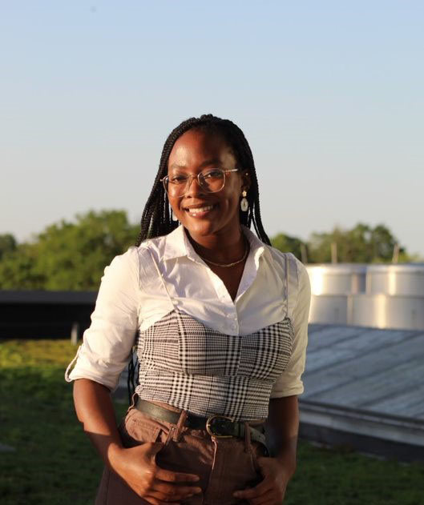

University of North Carolina at Chapel Hill student Lizabeth Bamgboye and alumna Maria Silva have been awarded the prestigious Schwarzman Scholarship.
University of North Carolina at Chapel Hill student Lizabeth Bamgboye and alumna Maria Silva have been awarded the prestigious Schwarzman Scholarship, which provides a fully-funded master’s program in global affairs at Beijing’s Tsinghua University. They are Carolina’s 12th and 13th Schwarzman Scholars since the scholarship began in 2015. “Lizabeth and Maria are exemplars of Carolina students who combine academic excellence, community-centered leadership and global engagement,” said Marc Howlett, executive director of the Office of Distinguished Scholarships. “As Carolina’s 12th and 13th Schwarzman Scholars, they will continue strengthening connections between UNC-Chapel Hill and a growing community of global leaders.”
Bamgboye is a senior, double majoring in global studies and political science with a minor in creative writing. She is an Honors Carolina student, Phillips Ambassador, Buckley Public Service Scholar, president of the Ebony Readers/Onyx Theatre, global studies research assistant and member of Phi Beta Kappa honor society. A poet and data scientist, Bamgboye sees the Schwarzman Scholarship as the culmination of her Carolina career, which included studying abroad in Taiwan as a Phillips Ambassador. At Tsinghua University she will work to unite scholarship with the community by exploring her passions for social science research and poetry across new dimensions. “In this next stage of globalization, we must be creative, courageous and empathetic,”
said Bamgboye.